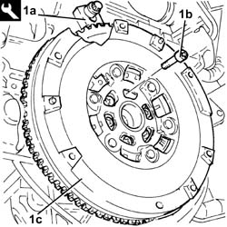
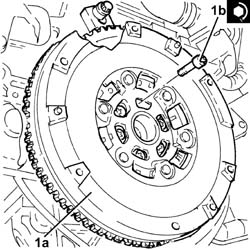
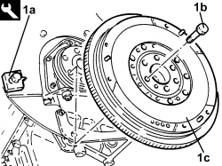
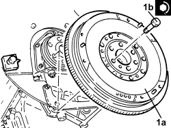
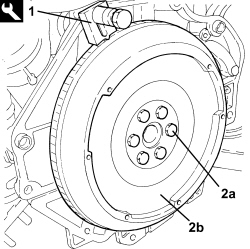

1024B22 ENGINE FLYWHEEL - R.R WITH CLUTCH REMOVED FOR VERSIONS WITH MANUAL GEARBOX
- Path
- Procedures > 10 ENGINE > 1024 CRANKSHAFT AND FLYWHEEL > 1024B ENGINE FLYWHEEL > 1024B22 ENGINE FLYWHEEL - R.R WITH CLUTCH REMOVED FOR VERSIONS WITH MANUAL GEARBOX
- Kind
- repair procedure (removal / refitting; the operation number is the code)
- Applies to
- engines: 1.8, 2.2, 1.9 JTD 8v, 1.9 JTD 16v; all production periods
- Interactive page
- https://sloeber94.github.io/elrnDB-fCrm/en/#/194000263
Applies to: engines: 2.2; all production periods
 Removing
Removing
 Refitting
Refitting1. With the flywheel lock (1a) fitted, undo the bolts (1b) and remove the flywheel (1c).
Tool | Description | Function | Validity |
|---|---|---|---|
1860846000 | Counter-torque | Flywheel lock |

Applies to: engines: 2.2; all production periods
Refitting
Removing1. Place the flywheel (1a) in its housing and secure it by tightening the bolts (1b) to the recommended torque.
Component | Fastening | dia | Value (daNm) | Validity |
|---|---|---|---|---|
Engine flywheel | Bolt (to be replaced) | - | (engine crankshaft side) 6.0 + 30° + 15° | 2.2 |

Applies to: engines: 1.9 JTD 8v, 1.9 JTD 16v; all production periods
Removing
Refitting1. With the flywheel lock (1a) fitted, undo the bolts (1b) and remove the flywheel (1c).
Tool | Description | Function | Validity |
|---|---|---|---|
1860846000 | Counter-torque | Flywheel lock |

Applies to: engines: 1.9 JTD 8v, 1.9 JTD 16v; all production periods
Refitting
Removing1. Place the flywheel (1a) in its housing and secure it by tightening the new bolts (1b) which have been pretreated with sealant to the recommended torque.
Component | Fastening | dia | Value (daNm) | Validity |
|---|---|---|---|---|
Engine flywheel | Bolt (pretreated to replace) | M12 | (crankshaft side) 14.4 - 17.6 | 1.9 JTD 16v 1.9 JTD 8v |

Applies to: engines: 1.8; all production periods
Removing
Refitting1. Fit the flywheel lock.
Tool | Description | Function | Validity |
|---|---|---|---|
1860846000 | Counter-torque | Flywheel lock |
2. Undo the bolts (2a) and remove the engine flywheel (2b).

Applies to: engines: 1.8; all production periods
Refitting
Removing- Place the flywheel in its housing and tighten the new bolts to the recommended torque.
Component | Fastening | dia | Value (daNm) | Validity |
|---|---|---|---|---|
Engine flywheel | Bolt (to be replaced) | - | 3.5 + 30° + 15° | 1.8 |
- Remove the flywheel lock.